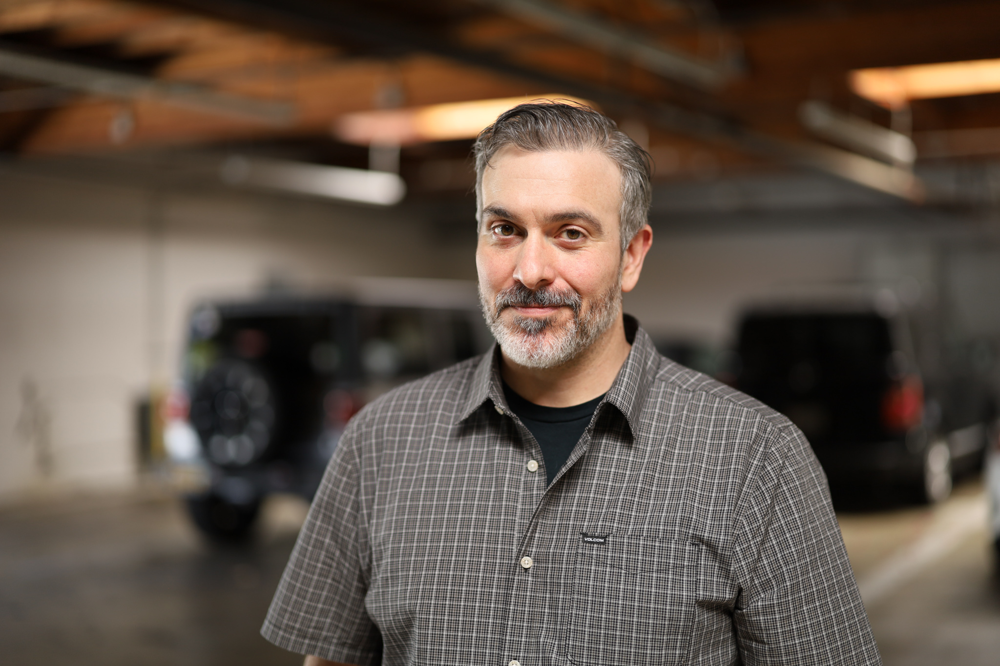

Jamie Campbell helps engineering teams build frontend systems that hold up — using AI to move faster without letting it make the decisions that only experience can make. Twenty years of frontend engineering. Zero tolerance for vibe coding.

AI-assisted development moves fast. Too fast for teams without senior architectural judgment in the loop. Vibe coding creates debt faster than it clears it — inconsistent patterns, broken token systems, CSS that compiles fine and breaks everything downstream.
The engineers who get the most out of AI aren't the ones who trust it most. They're the ones who know exactly where to stop it — where experience has to take over from automation.
That's the gap Augmentous Systems fills. Senior frontend architectural judgment, available without the senior headcount cost.
Establish the architectural foundation your team needs — component systems, CSS token layers, SCSS structure, and the patterns that hold up as projects scale and teams grow.
Audit legacy frontend codebases for drift, debt, and structural problems. SCSS architecture, component sprawl, accessibility liabilities — surfaced, prioritized, and fixed incrementally.
Design the workflow that lets your team use AI to move faster without introducing architectural chaos. What the AI builds, what it proposes, and what requires a senior engineer's sign-off.
Senior frontend architectural oversight for teams that need the expertise without the full-time headcount. Embedded, available, and accountable for the decisions that shape everything downstream.
A show for senior frontend engineers navigating AI-assisted development. Real codebases. Real architectural decisions. No hype. Watch a 20-year engineer figure out exactly where AI helps and exactly where it doesn't.
I started writing code when the web was young — Flash, ActionScript, hand-coded HTML before frameworks had opinions. Twenty years later I've watched every generation of tools promise to replace the engineer and fail. AI won't be different. But it will cause expensive problems in the hands of teams without senior architectural judgment in the loop.
"The senior engineer's job isn't to write the code anymore. It's to decide what the AI is allowed to do with it."
Today I work as Principal AI Agentic Architect at WGA Advisors, designing agentic systems for complex enterprise environments. I also carry a full-time senior engineering role at JLOOP and run Augmentous Systems as a frontend architecture consulting practice for teams that need senior judgment without the senior headcount cost.
My focus is the intersection of frontend architecture and AI-augmented development — specifically how senior engineers can use AI to move faster without letting it make the decisions that only experience can make.
Based in Davis, California. Available for fractional engagements, advisory roles, and enterprise consulting.
Whether you're an engineering leader with a legacy problem or a recruiter with a relevant opportunity — I'm direct and easy to reach.
[email protected]